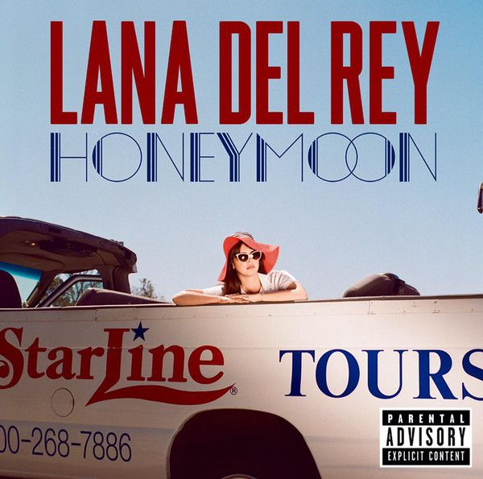
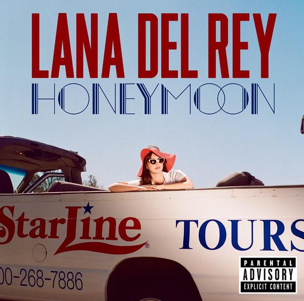
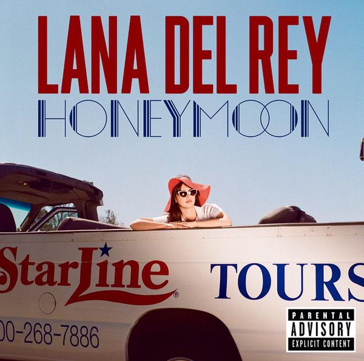

Galería
 

La mejor cantante femenina de la época.
Entre sus trabajos más destacados se encuentra "Born to Die", que incluye éxitos como "Video Games" y "Summertime Sadness". Su disco "Ultraviolence" marcó un giro más oscuro con canciones como "West Coast" y "Brooklyn Baby". Además, "Summertime Sadness" es considerada una de sus canciones más populares a nivel mundial.
Lana del Rey, nacida como Elizabeth Woolridge Grant el 21 de junio de 1985 en Nueva York, es una cantante y compositora que irrumpió en la escena musical en 2010. Con un estilo único que fusiona indie pop, dream pop y baroque pop, sus influencias provienen del cine clásico de Hollywood y la literatura. Reconocida por sus letras introspectivas y melancólicas, ha sido nominada a múltiples premios Grammy y ha recibido reconocimientos internacionales.
